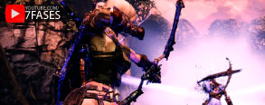
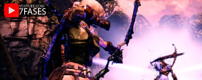

| GAME | JOGADORES | MODO DE GAME | ESTILO |
|---|---|---|---|
| Dragon Ball Fighters Z |
1 2 + Jogadores | Tela dividida, Online | Luta |
| Overcooked 1 |
1 2 3 4 Jogadores | Tela dividida | Party Game, Coop |
| Overcooked 2 |
1 2 3 4 Jogadores | Tela dividida, Online | Party Game, Coop |
| Magicka 2 |
1 2 3 4 Jogadores | Tela dividida, Online | Ação, Coop |
| Magicka |
1 2 3 4 Jogadores | Tela dividida | Ação, Coop |
| Gears of War 4 |
1 2 Jogadores | Tela dividida, LAN | Tiro, Coop |
| A Way Out |
2 Jogadores | Tela dividida | Coop |
| Hunted The Demon's Forge  |
1 2 Jogadores | Tela dividida, LAN | Aventura, Coop |
| Kalimba |
1 2 Jogadores | Tela dividida | Puzzle, Coop |
| Trine 3 |
1 2 3 Jogadores | Tela dividida | Aventura, Puzzle, Coop |
| Divinity Original Sin |
1 2 Jogadores | Tela dividida, Lan | RPG por turno, Coop |
| Divinity Original Sin 2 |
1 2 3 4 Jogadores | Tela dividida, Lan | RPG por turno, Coop |
| Cuphead |
1 2 3 4 Jogadores | Tela dividida | Shoot 'em up, Coop |
| Warhammer: Chaosbane |
1 2 3 4 Jogadores | Tela dividida | Hack and Slash, Coop |
| Resident Evil Revelations 2 |
1 2 Jogadores | Tela dividida | Sobrevivencia,Tiro, Coop |
| Resident Evil 5 |
1 2 Jogadores | Tela dividida, LAN | Sobrevivencia,Tiro, Coop |
| Resident Evil 5 |
1 2 Jogadores | Tela dividida, LAN | Sobrevivencia,Tiro, Coop |
| Game | Jogadores | Modo de game | Estilo |